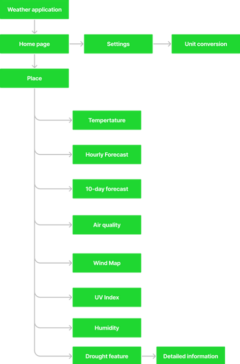
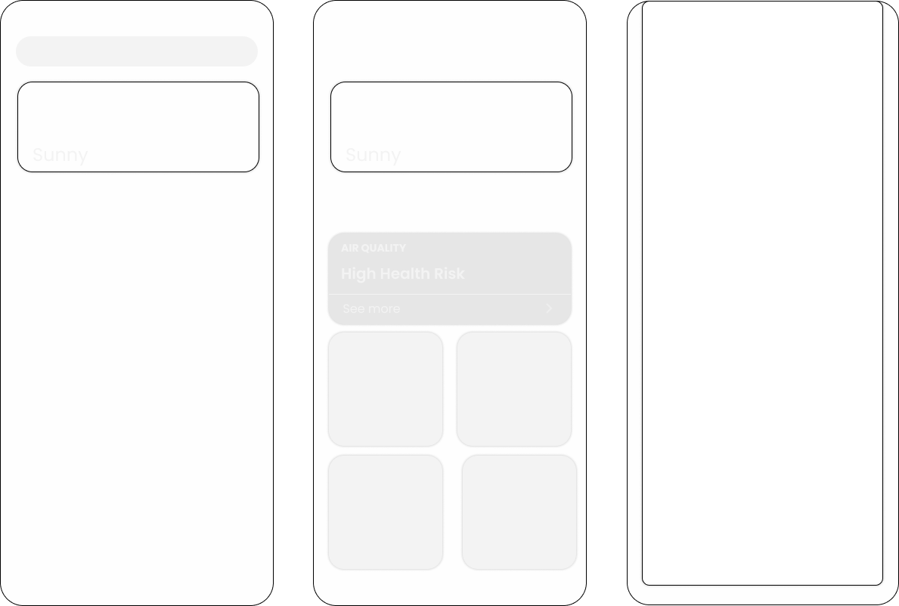

Case Study: Adding Drought Feature to Apple iOS Weather App
Intro
Objective
The objective of this case study is to design and implement a drought feature for the Apple iOS Weather App. The addition of this feature aims to provide users with valuable information about drought conditions in their location, allowing them to make informed decisions and take appropriate actions.
User Needs
- Users want to stay informed about weather conditions and potential droughts in their area.
- Users may need to adjust their daily activities or take preventive measures in response to drought conditions.
Design Approach
- The design of the drought feature will be user-centered, focusing on usability, accessibility, and visual clarity.
- The feature will be seamlessly integrated into the existing Weather App interface, providing a cohesive user experience.
Research Methodology
- User research will be conducted to understand user needs and preferences regarding drought information.
- Iterative design and testing will be carried out to ensure the feature meets user expectations and enhances the overall app experience.
Current Apple iOS Weather App
Current Features
- The Apple iOS Weather App provides users with the current weather conditions, including temperature, humidity, wind speed, and precipitation.
- It also offers a 7-day forecast, allowing users to plan their activities accordingly.
- The app provides location-based weather information, allowing users to view the weather in their current location or search for weather in other locations.
- Users can also add multiple cities to their favorites for quick access to the weather in those locations.
- The app includes a widget that displays the current weather on the home screen.
Understanding the Palmer Density Severity Index
What is the Palmer Density Severity Index (PDSI)?
The Palmer Density Severity Index is a measure of drought severity that takes into account both precipitation and temperature data. It provides a standardized way to assess and compare drought conditions across different regions.
How is the PDSI Calculated?
The PDSI is calculated using a complex algorithm that incorporates several factors, including precipitation, temperature, evaporation, and soil moisture. The index is updated monthly and can be used to track changes in drought conditions over time.
Why is the PDSI Important?
The PDSI is an important tool for assessing and monitoring drought conditions. It provides valuable information for policymakers, water resource managers, and agricultural professionals to make informed decisions about water allocation, irrigation strategies, and drought mitigation measures.
Interpreting the PDSI?
The PDSI is typically reported as a numerical value, with negative values indicating drought conditions and positive values indicating wet conditions. The magnitude of the value indicates the severity of the drought or wet spell, with more negative or positive values indicating more extreme conditions.
Research and User Insights
User Surveys
- Conducted surveys to gather opinions and preferences of iOS Weather App users regarding the need for a drought feature.
- Majority of users expressed interest in having a drought feature to stay informed about water scarcity in their area.
User Interviews
- Conducted in-depth interviews with a diverse group of iOS Weather App users find out the needs related to drought information.
- Users expressed a desire for real-time drought updates and notifications to help them make informed decisions about planting crops.
Market Research
- Analyzed market trends and competitors' weather apps to identify if any existing apps offer a drought feature.
- Found that very few weather apps provide comprehensive drought information, indicating an opportunity to differentiate the iOS Weather App.
Designing the Drought Feature
User Interface
- The drought feature will be integrated into the existing Apple iOS Weather App.
- The user interface will display current drought conditions, including drought severity and duration.
- Users will be able to view drought forecasts for their location and see what plants they will be able to plant within the index.
User Experience
- The drought feature will provide users with valuable information about drought conditions in their area.
- It will help users make informed decisions about water usage and conservation.
- The feature will be intuitive and user-friendly, with clear and concise information presented in a visually appealing manner.
Information Architecture

Initial WireFrames

This are the Low-Fidelity wireframes, where I sketched the initial UI screens to get a basic idea of the Interface design.
Final UI Design